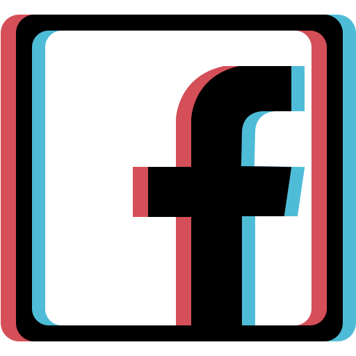

Cyberpunk
Le cyberpunk est un genre de science-fiction qui se concentre sur l'utilisation de la technologie avancée et l'informatique dans un monde futuriste dystopique. Les histoires de cyberpunk souvent mettent en scène des personnages qui utilisent cette technologie pour naviguer dans un monde où les grandes corporations et les gouvernements ont un pouvoir absolu.
Le genre cyberpunk a été popularisé dans les années 80 avec des œuvres telles que Neuromancer de William Gibson et Snow Crash de Neal Stephenson. Ces livres et d'autres de ce genre ont décrit des mondes futuristes où la technologie a pris le dessus sur la société, créant des inégalités économiques et sociales encore plus grandes. Les personnages de ces histoires sont souvent des marginaux qui utilisent leur connaissance de la technologie pour naviguer dans ces mondes dystopiques et résister aux forces qui cherchent à les opprimer.
Le cyberpunk a également été un élément important de la culture populaire, en particulier dans les jeux vidéo et les films. Des exemples notables incluent la série de jeux vidéo Deus Ex, le film Matrix et la série animée Ghost in the Shell.
En résumé, le genre cyberpunk se concentre sur l'utilisation de la technologie avancée dans un monde futuriste dystopique, mettant en scène des personnages qui utilisent leur connaissance de cette technologie pour naviguer dans ce monde et résister aux forces qui cherchent à les opprimer. Il a été popularisé dans les années 80 avec des œuvres telles que Neuromancer de William Gibson et Snow Crash de Neal Stephenson et reste un élément important de la culture populaire.
plongez dans un univers futuriste dystopique
Cyberpunk 2077 est un jeu de rôle de science-fiction développé par CD Projekt RED, se déroulant dans la ville futuriste de Night City en 2077. Les joueurs incarnent un mercenaire en quête de gloire et de richesse dans un monde où la technologie et les corporations ont pris le dessus sur la société. Il met en vedette Keanu Reeves dans le rôle de Johnny Silverhand, un personnage emblématique de la série, et capture l'essence du genre cyberpunk avec des thèmes tels que la technologie avancée, les corporations malveillantes, les inégalités économiques et la résistance contre l'oppression.
Cyberpunk 2077 sur les réseaux sociaux
Il existe de nombreux groupes et communautés dédiés au genre cyberpunk sur les réseaux sociaux tels que Facebook, Twitter et Reddit. Ces groupes rassemblent des fans de la science-fiction cyberpunk qui partagent des informations sur les dernières sorties de livres, de films et de jeux, ainsi que des discussions sur les thèmes et les idées liées au genre. Les groupes sur Facebook et Reddit sont souvent une source d'informations sur les prochains événements liés au cyberpunk, tels que les conventions et les festivals. Les utilisateurs de Twitter peuvent suivre les comptes des auteurs, des studios de jeux vidéo et des acteurs pour rester informés des dernières nouvelles et des annonces. Il existe également de nombreux hashtags liés au cyberpunk, tels que #cyberpunk2077 et #cyberpunk qui permettent de suivre les conversations sur les réseaux sociaux. En somme, les réseaux sociaux sont une excellente façon de découvrir de nouvelles œuvres, de participer à des discussions sur le genre cyberpunk et de rester informé des dernières nouvelles et des annonces liées à ce dernier.
Cyberpunk: Edgerunners - une série animée spin-off de Cyberpunk 2077
Cyberpunk: Edgerunners est une série animée spin-off de la franchise Cyberpunk 2077. Produit par Studio Trigger, la série suivra les aventures d'un groupe de jeunes Edgerunners, des mercenaires à la recherche de leur place dans la ville futuriste de Night City. La série est écrite par Yoshiki Usa, créateur de Kill la Kill, et dirigée par Hiroyuki Imaishi, réalisateur de Prometheu et de la même Kill la Kill.
fans de la franchise Cyberpunk peuvent s'attendre à une série animée de haute qualité avec une histoire passionnante, des personnages intrigants et des graphismes époustouflants. La série offrira également un aperçu de la vie dans Night City en dehors des aventures de V, le personnage principal du jeu. Cyberpunk: Edgerunners sera diffusé sur Netflix en 2022. En somme, Cyberpunk: Edgerunners s'annonce comme un spin-off passionnant pour les fans de la franchise Cyberpunk 2077, qui pourront découvrir de nouveaux personnages, de nouvelles histoires et de nouveaux défis dans l'univers futuriste de Night City